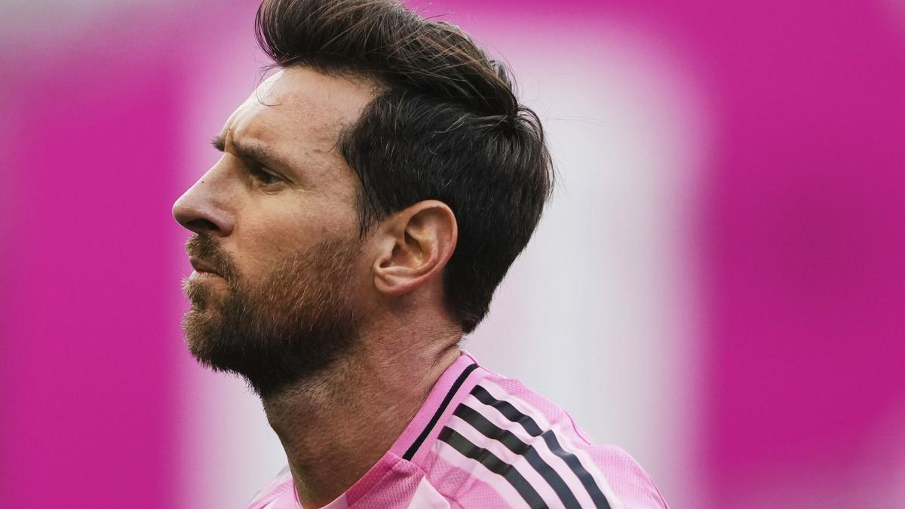

Inicio
Enlaces
Contacto
La actualidad del fútbol

El fútbol
El fútbol es un deporte muy importante en la sociedad. Esto lo podemos observar en cualquier parte del mundo. El fútbol internacional vive momentos de alta intensidad, con las competiciones europeas en plena fase de liga, los torneos domésticos al rojo vivo y la acción copera en marcha, las principales ligas muestran batallas muy cerradas tanto en la parte alta como en la zona baja de la clasificaciones.
Ferran Torres
Ferran Torres es un jugador de fútbol español que en la actualidadjuega como delantero en el Paris Saint-Germain tras su compra este mismo año. Tras un verano histórico en el que se coronó campeón del mundo con la Selección Española anotando el gol de la victoria en la final, el delantero valenciano vive semanas de mucha intensidad tanto dentro como fuera de los terrenos de juego.


